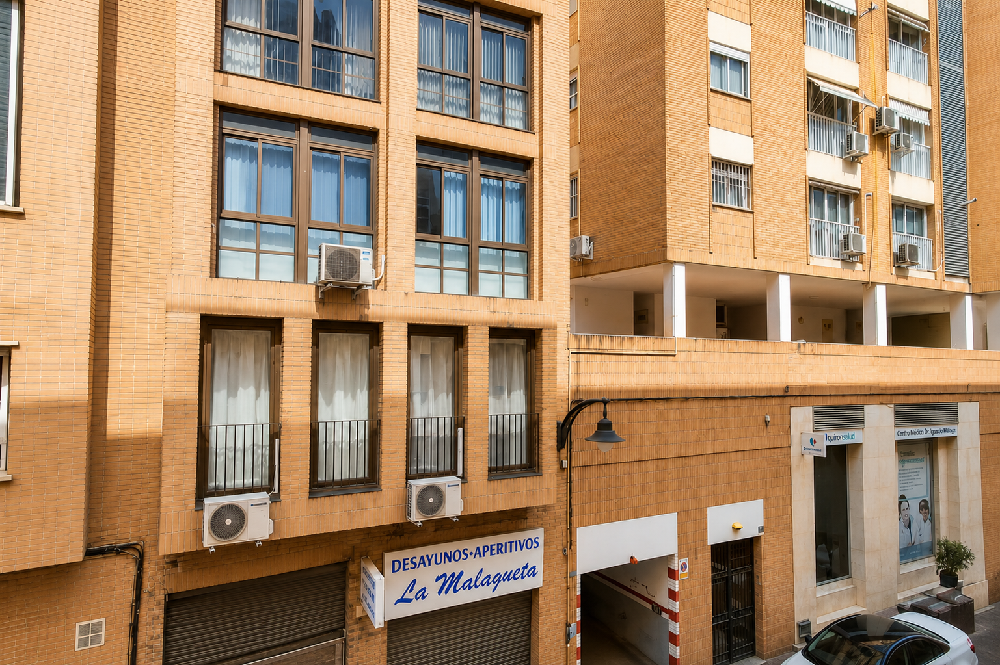

La Malagueta
Málaga, a unos pasos del mar.
Una ubicación consolidada que reúne playa, gastronomía, cultura y centro histórico, con la comodidad de una vida de barrio.
- PlayaLa Malagueta, a pocos minutos
- Muelle UnoPuerto y oferta gastronómica
- CentroCentro histórico a pie
- ParquePaseo del Parque y Alcazaba